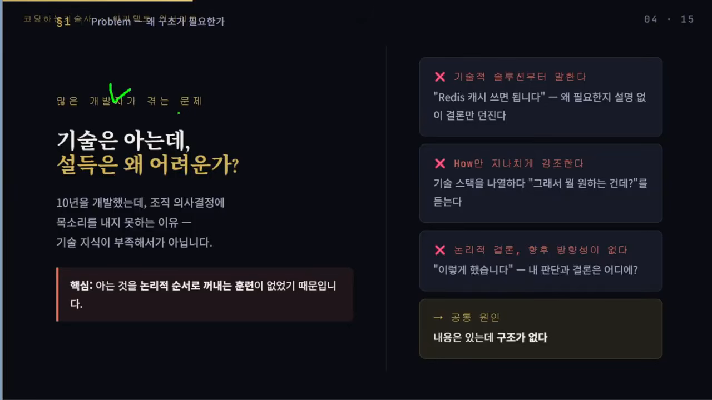
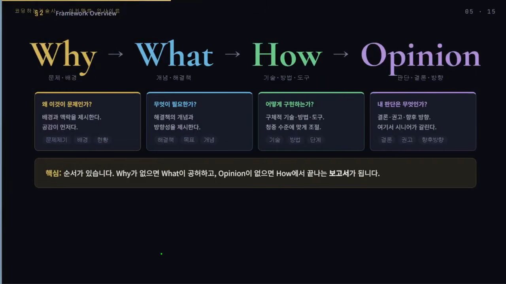
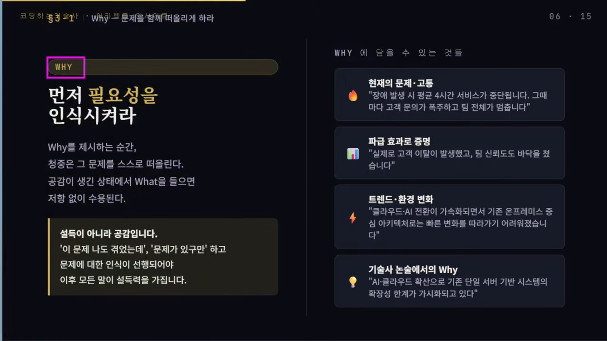
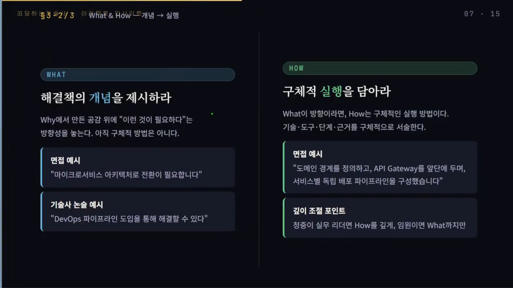
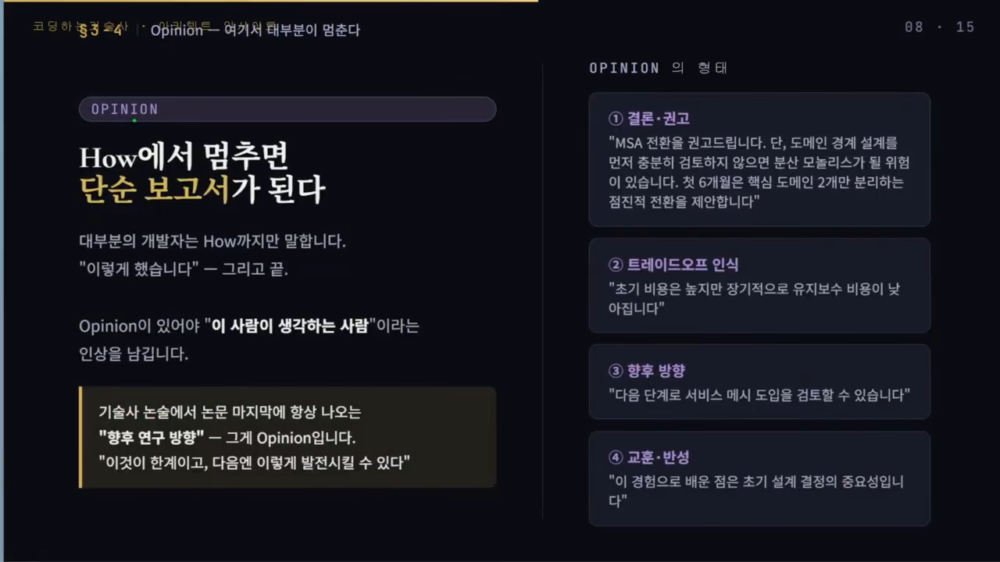
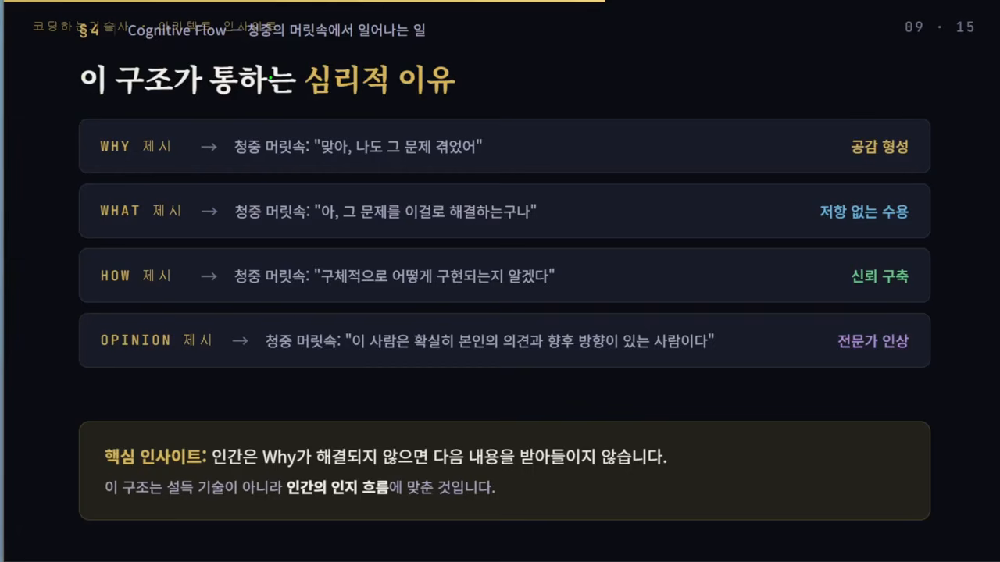
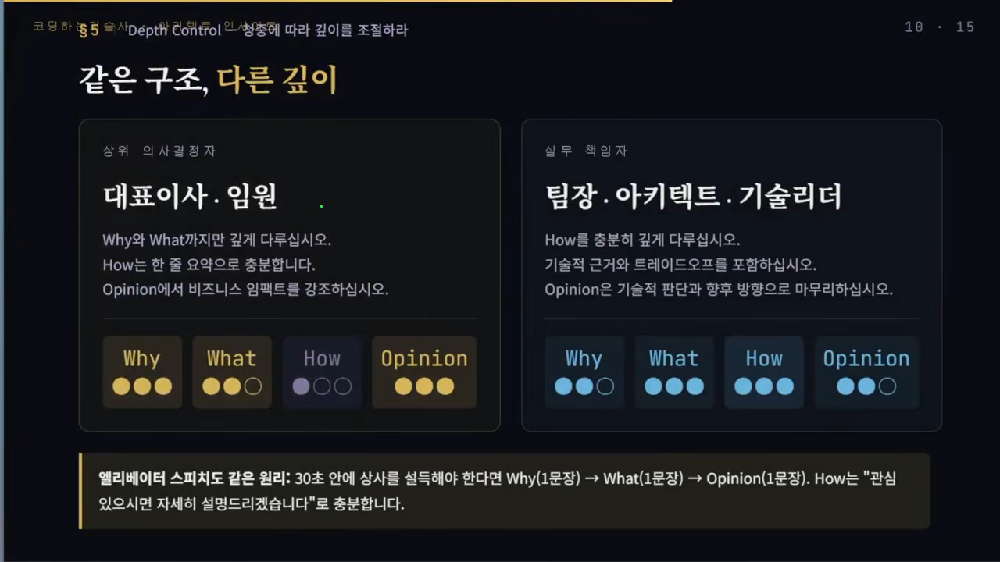
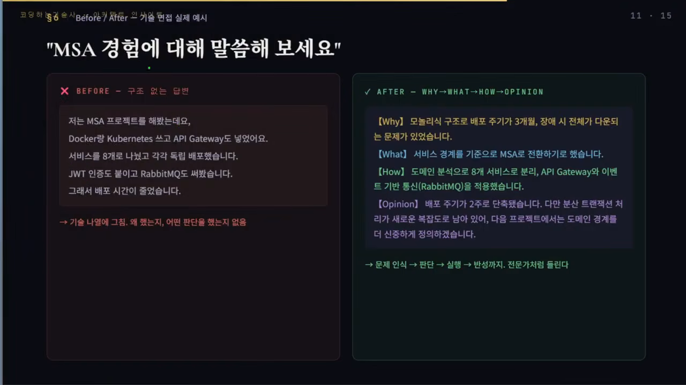
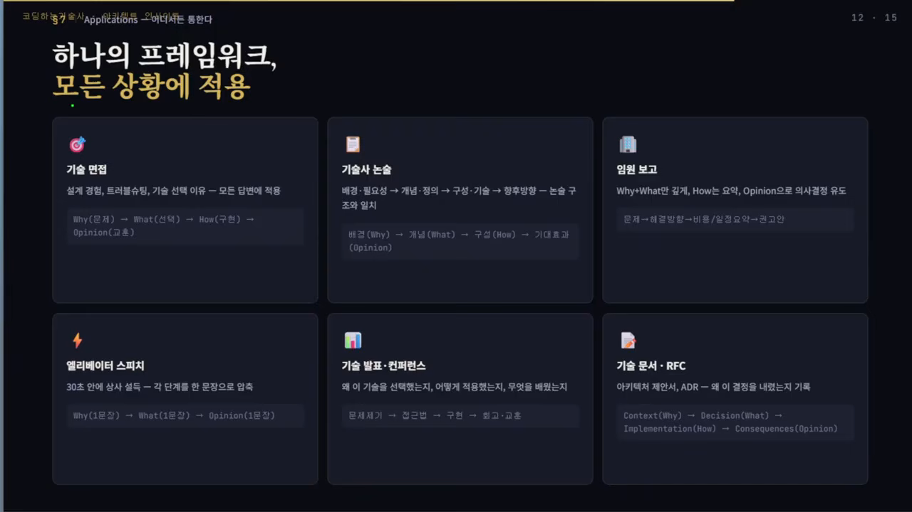
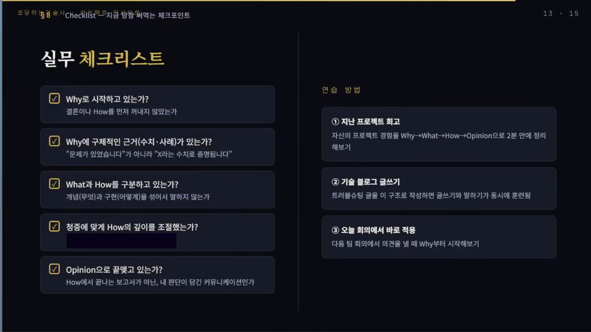

개발자의 말은 왜 설득이 안 될까요?
발표자는 20년 넘게 팀 리더·기술 리더로 일하면서 보고를 많이 했고, 여러 번 이직하며 실무 면접과 임원 면접을 치렀어요. 대학원 면접, 기술사 논술 시험과 면접, 석사 논문까지 논리적으로 말하고 써야 하는 자리도 여러 번 겪었죠. 그 경험에서 정리한 틀이 W²HO 프레임워크예요.
이름은 네 단계의 앞글자에서 왔어요. Why와 What, W가 두 번 나와서 W²이고 여기에 How와 Opinion이 붙어요. 연차가 오르면 브리핑과 보고 자리가 늘고, 이직할 때도 면접에서 말로 자신을 보여 줘야 하죠. 발표자는 이 틀을 기본 구조로 잡으면 어떤 자리에서든 설득력이 달라진다고 말해요.
내용은 있는데 구조가 없어요
10년을 개발하고도 조직의 의사결정에 목소리를 못 내는 개발자가 많아요. 발표자는 기술이 모자라서가 아니라고 봐요. 아는 것을 논리적인 순서로 꺼내는 훈련을 해 본 적이 없어서예요. 그래서 이런 실수가 자주 나와요.
- 해결책부터 말해요. "Redis 캐시 쓰면 됩니다"처럼 왜 필요한지 설명 없이 결론만 던져요.
- How만 길어요. 기술을 잘 알다 보니 구현 방법을 지나치게 늘어놓아요. 비개발 직군이나 임원은 알아듣기 어렵고 금방 지쳐요.
- 결론과 방향이 없어요. 기술은 나열했는데, 그래서 우리 조직에 어떻게 적용하고 앞으로 어디로 갈지가 빠져 있어요.

W²HO 네 단계
네 단계는 순서가 핵심이에요. Why가 없으면 What이 허공에 뜨고, Opinion이 없으면 How에서 끝나는 보고서가 돼요.

| 단계 | 답하는 질문 | 담는 것 | 영상 속 예시 |
|---|---|---|---|
| Why | 왜 이것이 문제인가? | 배경, 맥락, 현재의 고통 | 장애가 나면 평균 4시간 서비스가 멈춰요 |
| What | 무엇이 필요한가? | 해결책의 개념과 방향 | 마이크로서비스 아키텍처로 전환해야 해요 |
| How | 어떻게 구현하나? | 기술, 도구, 단계, 근거 | 도메인 경계를 정하고 API Gateway를 앞단에 둬요 |
| Opinion | 내 판단은 무엇인가? | 결론·권고, 트레이드오프, 향후 방향, 교훈 | 첫 6개월은 핵심 도메인 2개만 나누자고 제안해요 |
Why — 설득보다 공감이 먼저예요
Why를 먼저 꺼내는 순간, 듣는 사람은 그 문제를 스스로 떠올려요. '이 문제 나도 겪었는데', '문제가 있긴 하네' 하는 인식이 먼저 생겨야 뒤에 오는 말이 자연스럽게 힘을 얻어요. 발표자가 '설득이 아니라 공감'이라고 강조하는 이유예요.
Why에 무엇을 담을지는 주제마다 달라요. 영상은 이런 예를 들어요.
- 현재의 문제와 고통: 장애가 나면 평균 4시간 서비스가 멈추고, 그때마다 고객 문의가 몰려 팀 전체가 멈춰요.
- 파급 효과: 실제로 고객이 떠났고 팀 신뢰도도 떨어졌다는 식으로 결과를 보여 줘요. 수치가 있으면 더 좋아요.
- 트렌드와 환경 변화: 클라우드·AI 전환이 빨라져서 기존 온프레미스 중심 아키텍처로는 따라가기 어려워졌다는 식이에요.
- 한계점: 기존 단일 서버 기반 시스템의 확장성 한계가 드러나고 있다는 식이에요.

기술사 논술 시험에서도 마찬가지예요. 발표자는 2~4교시 답안의 첫 단락에 Why를 두라고 권해요. 문제가 따로 형식을 정해 주지 않았다면 Why부터 써야 채점자도 흐름을 따라가기 쉽다는 거예요.
What — 해결책의 개념만 먼저 던져요
Why로 공감대를 만들었다면 '그래서 이런 게 필요하다'는 방향을 던질 차례예요. 면접이라면 "마이크로서비스 아키텍처로 전환이 필요합니다", 논술이라면 "DevOps 파이프라인을 도입해 해결할 수 있다" 정도예요. 여기서는 아직 구체적인 방법을 말하지 않아요.
How — 구체적인 실행을 담아요
What이 방향이라면 How는 실행 방법이에요. 어떤 기술과 도구를, 어떤 단계로, 무슨 근거로 쓰는지 말해요. 앞의 예라면 도메인 경계를 정의하고, API Gateway를 앞단에 둬서, 서비스별로 독립된 배포 파이프라인을 구성한다는 게 How예요.

Opinion — 내 판단으로 끝내요
How에서 멈추면 '이렇게 했습니다'로 끝나는 보고서가 돼요. 대부분의 개발자가 여기서 멈춘다는 게 발표자의 진단이에요. Opinion이 있어야 '이 사람은 생각을 제대로 하는구나' 하는 인상을 줘요.
How에서만 끝나면 단순 보고서가 됩니다.
— 영상 06:48
Opinion에는 결론과 권고, 트레이드오프, 향후 방향, 교훈과 반성을 담을 수 있어요. 논문이나 기술사 답안 끝에 붙는 '향후 연구 방향'도 Opinion이에요. '지금은 여기까지가 한계이고, 다음엔 이렇게 발전시킬 수 있다'는 식이죠.

왜 통하고, 누구에게 얼마나 깊게 말할까요?
발표자는 이 순서가 듣는 사람 머릿속에서 일어나는 일과 맞아떨어진다고 설명해요.
Why를 들으면 '맞아, 나도 그 문제 겪었어' 하고 공감해요. What을 들으면 '아, 그 문제를 이걸로 해결하는구나' 하고 저항 없이 받아들여요. How에서는 '구체적으로 어떻게 구현되는지 알겠다'는 신뢰가 생기고, Opinion에서는 '이 사람은 자기 의견과 향후 방향이 확실하구나' 하는 전문가 인상이 남아요.

그래서 발표자는 이 구조가 설득 기술이기 이전에 사람이 이해하는 흐름에 맞춘 거라고 말해요. 사람은 Why가 풀리지 않으면 그다음 내용을 쉽게 받아들이지 못한다는 거예요.
청중에 따라 깊이를 바꿔요
구조는 같아도 누구 앞에서 말하느냐에 따라 단계별 무게가 달라져요. 영상 슬라이드는 이걸 점 세 개로 표시했는데, 표로 옮기면 이래요.
| 청중 | Why | What | How | Opinion | 이렇게 말해요 |
|---|---|---|---|---|---|
| 대표이사·임원 (상위 의사결정자) | 깊게 | 보통 | 짧게 | 깊게 | How는 한 줄로 줄이거나 '자세히 설명드릴까요?'라고 물어요. Opinion에서는 비즈니스 임팩트를 강조해요. |
| 팀장·아키텍트·기술 리더 (실무 책임자) | 보통 | 깊게 | 깊게 | 보통 | How를 충분히 깊게 다루고 기술적 근거와 트레이드오프를 넣어요. 기술적 판단과 향후 방향으로 마무리해요. |
임원은 구체적인 구현 방식에 크게 관심이 없을 수 있어요. 반대로 실무 리더는 어떻게 구현하는지, 시간이 얼마나 걸리는지, 어떤 도구를 쓰는지가 궁금하죠. 실무 리더에게는 Why와 What이 이미 정해져 있는 경우도 있어요.
엘리베이터 스피치처럼 짧은 시간에 상사를 설득해야 할 때도 같은 원리예요. Why, What, Opinion을 한 문장씩 말하고, How는 '관심 있으시면 자세히 설명드리겠습니다'로 미뤄 두면 돼요.

같은 MSA 경험, 두 가지 답변
발표자는 면접 질문 하나로 두 답변을 나란히 비교해요. 질문은 "MSA 경험에 대해 말씀해 보세요"예요.
구조 없이 답하면
Docker와 Kubernetes를 썼고, API Gateway를 넣었고, 서비스를 8개로 나눠 따로 배포했고, JWT 인증과 RabbitMQ도 붙였고, 그래서 배포 시간이 줄었다는 식으로 흘러가요. 기술 이름은 많은데 Why와 How의 경계가 흐려요. 왜 그걸 했는지, 그래서 내 판단은 뭔지, 앞으로 어떻게 할 건지가 없어요. 기술 나열에서 그쳐요.
W²HO로 답하면
- Why: 모놀리식 구조라 배포 주기가 3개월이었고, 장애가 나면 전체가 다운되는 문제가 있었어요.
- What: 그래서 서비스 경계를 기준으로 MSA로 전환하기로 했어요.
- How: 도메인을 분석해 8개 서비스로 나누고, API Gateway와 이벤트 기반 통신을 적용했어요.
- Opinion: 배포 주기가 2주로 줄었어요. 다만 분산 트랜잭션 처리가 새로운 복잡도로 남아서, 다음 프로젝트에서는 도메인 경계를 더 신중하게 정의해야겠다고 느꼈어요.

재료는 같은데 듣는 느낌이 달라요. 문제 인식, 판단, 실행, 반성이 차례로 나오니 전문가처럼 들려요. 특히 Opinion에서 성과만 말하지 않고 남은 문제와 다음에 바꿀 점까지 말한 게 차이를 만들어요.
어디에 쓰고 어떻게 점검할까요?
발표자는 이 틀을 면접, 보고, 발표, 문서까지 여러 상황의 기본 뼈대로 쓸 수 있다고 해요. 상황마다 단계 이름만 조금씩 바뀌어요.
| 상황 | 이렇게 흘러가요 |
|---|---|
| 기술 면접 (설계 경험, 트러블슈팅, 기술 선택 이유) | 문제 → 선택 → 구현 → 교훈 |
| 기술사 논술 | 배경·필요성 → 개념 → 구성·기술 → 향후 방향 |
| 임원 보고 | Why·What은 깊게, How는 핵심만, Opinion으로 의사결정을 끌어내요 |
| 엘리베이터 스피치 | Why·What·Opinion을 한 문장씩, How는 뒤로 미뤄요 |
| 기술 발표·컨퍼런스 | 문제 제기 → 접근법 → 구현 → 회고·교훈 |
| 기술 문서·ADR | Context → Decision → Implementation → Consequences |

기술 문서를 쓸 때도 왜 이 결정을 내렸는지 맥락(Context)을 먼저 쓰고, 그다음 결정(Decision), 즉 What을 써요. 그 뒤에 구현과 결론을 붙이는 식이에요.
말하기 전 다섯 가지 점검
- Why로 시작했나요? 결론이나 How를 먼저 꺼내지 않았는지 봐요.
- Why에 구체적인 근거가 있나요? '문제가 있었다'보다 수치나 사례로 보여 주는 쪽이 힘이 세요.
- What과 How를 나눴나요? 무엇이 필요한지와 그걸 어떻게 구현하는지를 섞지 않아요.
- 청중에 맞게 How의 깊이를 조절했나요? 임원 보고에 깊은 기술 설명은 필요 없을 수 있어요. 다만 그 임원이 기술에 관심이 많다면 깊게 들어가도 좋아요.
- Opinion으로 끝냈나요? How에서 끝나는 보고가 아니라 내 판단이 담긴 말인지 확인해요.

연습은 작게 시작하면 돼요. 지난 프로젝트 경험을 이 순서로 2분 안에 말해 보거나, 트러블슈팅 블로그 글을 이 구조로 써 보는 거예요. 다음 팀 회의에서 의견을 낼 때 Why부터 꺼내 보는 것도 좋아요.
Why가 없으면 설득이 아닙니다. 공감이 먼저입니다.
— 영상 13:29
발표자는 몇 번만 연습하면 금방 익숙해진다고 말하며 영상을 마무리해요.